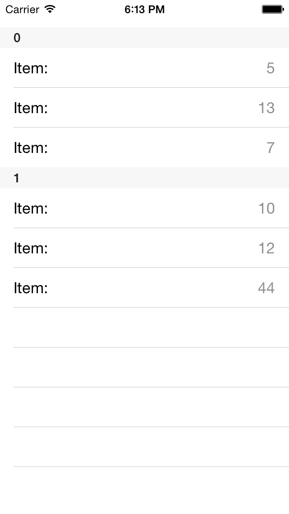
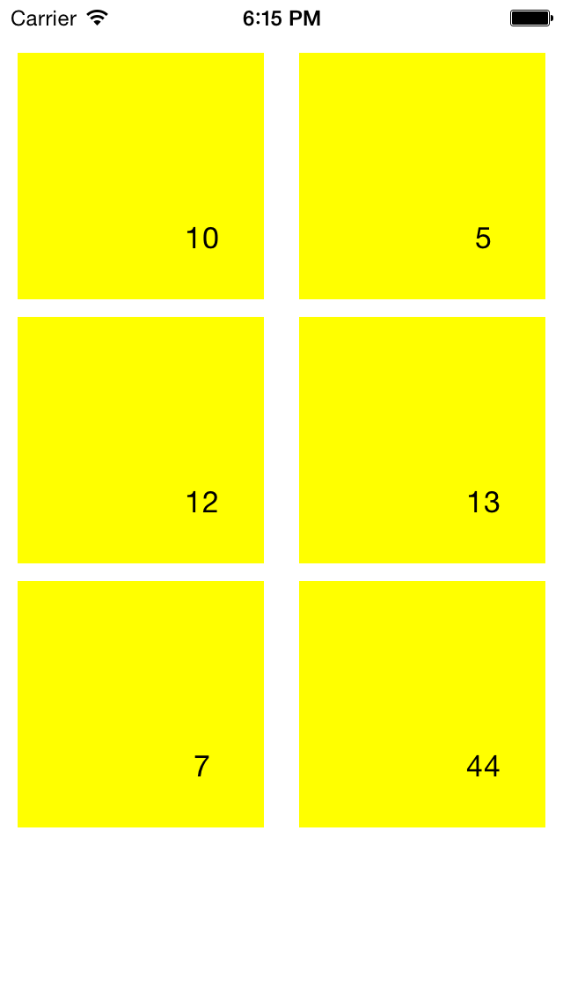

DataSource: Binding with UI Controls
TKDataSource works well with data enabled controls and provides an easy way to shape and present your data. The currently supported UI controls are:
- UITableView
- UICollectionView
- TKListView
- TKChart
- TKCalendar
This article describes how to bind TKDataSource and customize those controls.
UITableView

Setting the dataSource property is enough in order to present data in UITableView. TKDataSource will take care of the implementation of all methods in UITableViewDataSource protocol:
Objective-C
self.dataSource = [[TKDataSource alloc] initWithArray:@[ @10, @5, @12, @13, @7, @44 ]];
UITableView *tableView = [[UITableView alloc] initWithFrame:CGRectInset(self.view.bounds, 0, 30)];
tableView.autoresizingMask = UIViewAutoresizingFlexibleWidth | UIViewAutoresizingFlexibleHeight;
tableView.dataSource = self.dataSource;
[self.view addSubview:tableView];
Swift
self.dataSource = TKDataSource(array: [ 10, 5, 12, 13, 7, 44 ])
let tableView = UITableView(frame: CGRectInset(self.view.bounds, 0, 30))
tableView.autoresizingMask = UIViewAutoresizing.FlexibleWidth | UIViewAutoresizing.FlexibleHeight
tableView.dataSource = self.dataSource
self.view.addSubview(tableView)
You can specify displayKey and valueKey properties to specify what to display in table view cells:
Objective-C
NSMutableArray *items = [NSMutableArray new];
[items addObject:[[DataSourceItem alloc] initWithName:@"John" value:50 group:@"A"]];
[items addObject:[[DataSourceItem alloc] initWithName:@"Abby" value:33 group:@"A"]];
[items addObject:[[DataSourceItem alloc] initWithName:@"Smith" value:42 group:@"B"]];
[items addObject:[[DataSourceItem alloc] initWithName:@"Peter" value:28 group:@"B"]];
[items addObject:[[DataSourceItem alloc] initWithName:@"Paula" value:25 group:@"B"]];
self.dataSource.displayKey = @"name";
self.dataSource.valueKey = @"value";
self.dataSource.itemSource = items;
NSLog(@"%@", [self.dataSource textFromItem:self.dataSource.items[0] inGroup:nil]);
Swift
var items = [DataSourceItem]()
items.append(DataSourceItem(name: "John", value: 50, group:"A"))
items.append(DataSourceItem(name: "Abby", value: 33, group:"A"))
items.append(DataSourceItem(name: "Smith", value: 42, group:"B"))
items.append(DataSourceItem(name: "Peter", value: 28, group:"B"))
items.append(DataSourceItem(name: "Paula", value: 25, group:"B"))
if let dataSource = self.dataSource {
dataSource.displayKey = "name"
dataSource.valueKey = "value"
dataSource.itemSource = items
}
println(self.dataSource?.textFromItem(self.dataSource?.items[0], inGroup: nil))
In the majority of the scenarios you will also need to customize the cells. In this case you can implement the initCell block from TKDataSourceTableViewSettings class:
Objective-C
[self.dataSource.settings.tableView initCell:^(UITableView *tableView, NSIndexPath *indexPath, UITableViewCell *cell, id item) {
cell.textLabel.text = @"Item:";
cell.detailTextLabel.text = [self.dataSource textFromItem:item inGroup:nil];
}];
Swift
self.dataSource?.settings.tableView .initCell({ (UITableView tableView, NSIndexPath indexPath, UITableViewCell cell, id item) -> Void in
cell.textLabel?.text = "Item:"
cell.detailTextLabel?.text = self.dataSource?.textFromItem(item, inGroup: nil)
});
If this is not enough to achieve to look you want, you can create your custom cells by using the createCell block function:
Objective-C
[self.dataSource.settings.tableView createCell:^UITableViewCell *(UITableView *tableView, NSIndexPath *indexPath, id item) {
UITableViewCell *cell = [tableView dequeueReusableCellWithIdentifier:@"cell"];
if (cell == nil) {
cell = [[UITableViewCell alloc] initWithStyle:UITableViewCellStyleValue1 reuseIdentifier:@"cell"];
}
return cell;
}];
Swift
self.dataSource?.settings.tableView.createCell { (UITableView tableView, NSIndexPath indexPath, AnyObject item) -> UITableViewCell in
var cell = tableView.dequeueReusableCellWithIdentifier("cell") as! UITableViewCell?
if cell == nil {
cell = UITableViewCell(style:UITableViewCellStyle.Value1, reuseIdentifier:"cell")
}
return cell!
}
TKDataSource will take care of everything and no code is necessary even when your data is grouped:
Objective-C
[self.dataSource group:^id(id item) {
return @([item intValue] % 2 == 0);
}];
Swift
self.dataSource?.group({ (NSNumber item) -> AnyObject! in
return item.intValue % 2 == 0;
})
UICollectionView

TKDataSource integrates well with UICollectionView. Just set the dataSource property and prepare the collection view:
Objective-C
UICollectionViewFlowLayout *layout = [UICollectionViewFlowLayout new];
layout.itemSize = CGSizeMake(140, 140);
UICollectionView *collectionView = [[UICollectionView alloc] initWithFrame:CGRectInset(self.view.bounds, 0, 30) collectionViewLayout:layout];
collectionView.autoresizingMask = UIViewAutoresizingFlexibleWidth | UIViewAutoresizingFlexibleHeight;
collectionView.dataSource = self.dataSource;
collectionView.backgroundColor = [UIColor whiteColor];
[self.view addSubview:collectionView];
Swift
let layout = UICollectionViewFlowLayout()
layout.itemSize = CGSizeMake(140, 140)
let collectionView = UICollectionView(frame:CGRectInset(self.view.bounds, 0, 30), collectionViewLayout:layout)
collectionView.autoresizingMask = UIViewAutoresizing.FlexibleWidth | UIViewAutoresizing.FlexibleHeight
collectionView.dataSource = self.dataSource
collectionView.backgroundColor = UIColor.whiteColor()
self.view.addSubview(collectionView)
Use the collection view settings class and its initCell in case you want to customize the cell appearance:
Objective-C
[self.dataSource.settings.collectionView initCell:^(UICollectionView *collectionView, NSIndexPath *indexPath, UICollectionViewCell *cell, id item) {
TKCollectionViewCell *tkcell = (TKCollectionViewCell*)cell;
tkcell.label.text = [self.dataSource textFromItem:item inGroup:nil];
tkcell.backgroundColor = [UIColor yellowColor];
}];
Swift
self.dataSource?.settings.collectionView.initCell({ (UICollectionView collectionView, NSIndexPath indexPath,
UICollectionViewCell cell, AnyObject item) -> Void in
let tkCell = cell as! TKCollectionViewCell
tkCell.label.text = self.dataSource?.textFromItem(item, inGroup: nil)
tkCell.backgroundColor = UIColor.yellowColor()
})
TKListView

You can also easily use TKListView with TKDataSource:
Objective-C
TKListView *listView = [[TKListView alloc] initWithFrame:CGRectInset(self.view.bounds, 0, 30)];
listView.autoresizingMask = UIViewAutoresizingFlexibleWidth | UIViewAutoresizingFlexibleHeight;
listView.dataSource = self.dataSource;
[self.view addSubview:listView];
Swift
let listView = TKListView(frame:CGRectInset(self.view.bounds, 0, 30))
listView.autoresizingMask = UIViewAutoresizing.FlexibleWidth | UIViewAutoresizing.FlexibleHeight
listView.dataSource = self.dataSource
self.view.addSubview(listView)
The initCell and createCell methods can be used to customize the cell appearance:
Objective-C
[self.dataSource.settings.listView createCell:^TKListViewCell *(TKListView *listView, NSIndexPath *indexPath, id item) {
return [listView dequeueReusableCellWithReuseIdentifier:@"myCustomCell" forIndexPath:indexPath];
}];
[self.dataSource.settings.listView initCell:^(TKListView *listView, NSIndexPath *indexPath, TKListViewCell *cell, id item) {
cell.textLabel.text = [self.dataSource textFromItem:item inGroup:nil];
((TKView*)cell.backgroundView).fill = [TKSolidFill solidFillWithColor:[UIColor colorWithWhite:0.1 alpha:0.1]];
}];
//...
[listView registerClass:[CustomListViewCell class] forCellWithReuseIdentifier:@"myCustomCell"];
Swift
self.dataSource?.settings.listView.createCell({ (TKListView listView, NSIndexPath indexPath, AnyObject item) -> TKListViewCell! in
return listView.dequeueReusableCellWithReuseIdentifier("myCustomCell", forIndexPath:indexPath) as! TKListViewCell
})
self.dataSource?.settings.listView.initCell({ (TKListView listView, NSIndexPath indexPath, TKListViewCell cell, AnyObject item) -> Void in
cell.textLabel.text = self.dataSource?.textFromItem(item, inGroup:nil)
(cell.backgroundView as! TKView).fill = TKSolidFill(color: UIColor(white: 0.1, alpha: 0.1))
})
//...
listView.registerClass(CustomListViewCell.self, forCellWithReuseIdentifier: "myCustomCell")
TKChart
In order to present data in TKChart, you need to set the displayKey and valueKey properties. The displayKey defines the x-axis values, and the valueKey defines the y-axis values:
Objective-C
NSMutableArray *items = [NSMutableArray new];
[items addObject:[[DataSourceItem alloc] initWithName:@"John" value:50 group:@"A"]];
[items addObject:[[DataSourceItem alloc] initWithName:@"Abby" value:33 group:@"A"]];
[items addObject:[[DataSourceItem alloc] initWithName:@"Paula" value:33 group:@"A"]];
[items addObject:[[DataSourceItem alloc] initWithName:@"John" value:42 group:@"B"]];
[items addObject:[[DataSourceItem alloc] initWithName:@"Abby" value:28 group:@"B"]];
[items addObject:[[DataSourceItem alloc] initWithName:@"Paula" value:25 group:@"B"]];
self.dataSource.displayKey = @"name";
self.dataSource.valueKey = @"value";
self.dataSource.itemSource = items;
TKChart *chart = [[TKChart alloc] initWithFrame:self.view.bounds];
chart.autoresizingMask = UIViewAutoresizingFlexibleWidth | UIViewAutoresizingFlexibleHeight;
chart.dataSource = self.dataSource;
[self.view addSubview:chart];
Swift
items.append(DataSourceItem(name: "John", value: 50, group:"A"))
items.append(DataSourceItem(name: "Abby", value: 33, group:"A"))
items.append(DataSourceItem(name: "Paula", value: 33, group:"A"))
items.append(DataSourceItem(name: "John", value: 42, group:"B"))
items.append(DataSourceItem(name: "Abby", value: 28, group:"B"))
items.append(DataSourceItem(name: "Paula", value: 25, group:"B"))
self.dataSource?.displayKey = "name"
self.dataSource?.valueKey = "value"
self.dataSource?.itemSource = items
let chart = TKChart(frame:self.view.bounds)
chart.autoresizingMask = UIViewAutoresizing.FlexibleWidth | UIViewAutoresizing.FlexibleHeight
chart.dataSource = self.dataSource
self.view.addSubview(chart)
In order to present different series the data should be grouped. When this is done the createSeries method can be used to customize the series that should be created:
Objective-C
[self.dataSource groupWithKey:@"group"];
[self.dataSource.settings.chart createSeries:^TKChartSeries *(TKDataSourceGroup *group) {
TKChartColumnSeries *series = [TKChartColumnSeries new];
return series;
}];
Swift
self.dataSource?.groupWithKey("group")
self.dataSource?.settings.chart.createSeries({ (TKDataSourceGroup group) -> TKChartSeries! in
let series = TKChartColumnSeries()
return series
})
TKCalendar
TKDataSource is able to represent your data as calendar events. In this scenario you should set the startDateKey and endDateKey properties:
Objective-C
self.dataSource.displayKey = @"name";
self.dataSource.settings.calendar.startDateKey = @"startDate";
self.dataSource.settings.calendar.endDateKey = @"endDate";
self.dataSource.settings.calendar.defaultEventColor = [UIColor redColor];
self.dataSource.itemSource = items;
TKCalendar *calendar = [[TKCalendar alloc] initWithFrame:CGRectInset(self.view.bounds, 0, 30)];
calendar.autoresizingMask = UIViewAutoresizingFlexibleWidth | UIViewAutoresizingFlexibleHeight;
calendar.dataSource = self.dataSource;
[self.view addSubview:calendar];
Swift
self.dataSource?.displayKey = "name"
self.dataSource?.settings.calendar.startDateKey = "startDate"
self.dataSource?.settings.calendar.endDateKey = "endDate"
self.dataSource?.settings.calendar.defaultEventColor = UIColor.redColor()
self.dataSource?.itemSource = items
let calendar = TKCalendar(frame:CGRectInset(self.view.bounds, 0, 30))
calendar.autoresizingMask = UIViewAutoresizing.FlexibleWidth | UIViewAutoresizing.FlexibleHeight
calendar.dataSource = self.dataSource
self.view.addSubview(calendar)